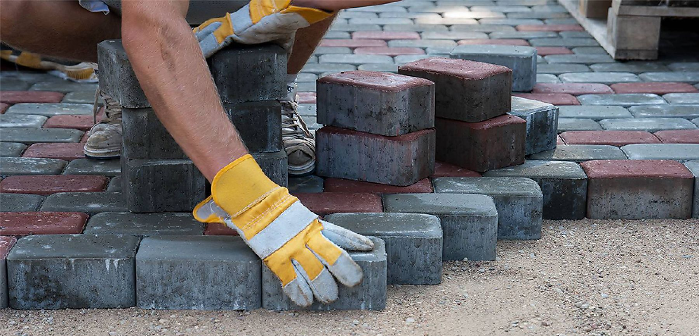

01
Технічна допомога
У майбутньому — електромонтажні, технічні та практичні роботи там, де такі навички можуть бути потрібними.
Ми віримо, що професійні знання, час і можливості мають цінність тоді, коли в майбутньому можуть бути використані не лише для власних задач, а й для людей.
Наш підхід
Не слова. Дії.
Поки що це насамперед власне прагнення працювати самостійно, брати відповідальність за рішення та доводити розпочату роботу до конкретного результату. У майбутньому цей підхід може стати основою для допомоги іншим.
Можливості
Соціальна відповідальність ще не є окремим напрямом нашої роботи. Це бачення того, як професійні навички та власні ресурси можна буде застосовувати для корисних справ.
У майбутньому — електромонтажні, технічні та практичні роботи там, де такі навички можуть бути потрібними.
Пошук технічних рішень, аналіз ситуацій і використання власного досвіду для вирішення практичних задач.
Є прагнення в майбутньому долучатися до ситуацій, де знання, час або практична робота можуть бути корисними для інших.
У перспективі — ділитися практичним досвідом і знаннями з людьми, які хочуть розвивати власні технічні навички.
Сильна спільнота починається не з великих заяв. Вона починається з людини, яка вирішила зробити те, що може.
PETEICHUKСьогодні
Соціальні ініціативи ще не стали окремим напрямом роботи. Зараз це насамперед готовність самостійно брати відповідальність за рішення та доводити власні задачі до результату.
Результати робіт



У перспективі
Якщо з'явиться конкретна ситуація, де можна бути корисним, принцип роботи буде простим і практичним.
З'являється конкретна ситуація або задача, у якій може знадобитися допомога.
Визначаємо, що саме потрібно, які ресурси доступні та чи можемо ми реально долучитися.
Якщо можемо допомогти — беремо конкретну задачу та переходимо до практичної роботи.
Фіксуємо те, що реально зроблено, без вигаданих показників чи заяв про допомогу, якої ще не було.
За кадром
Деякі історії краще розповідають фотографії.
У майбутньому
Опишіть завдання. Якщо в майбутньому ми зможемо допомогти знаннями, роботою або власними ресурсами — розглянемо можливість долучитися.